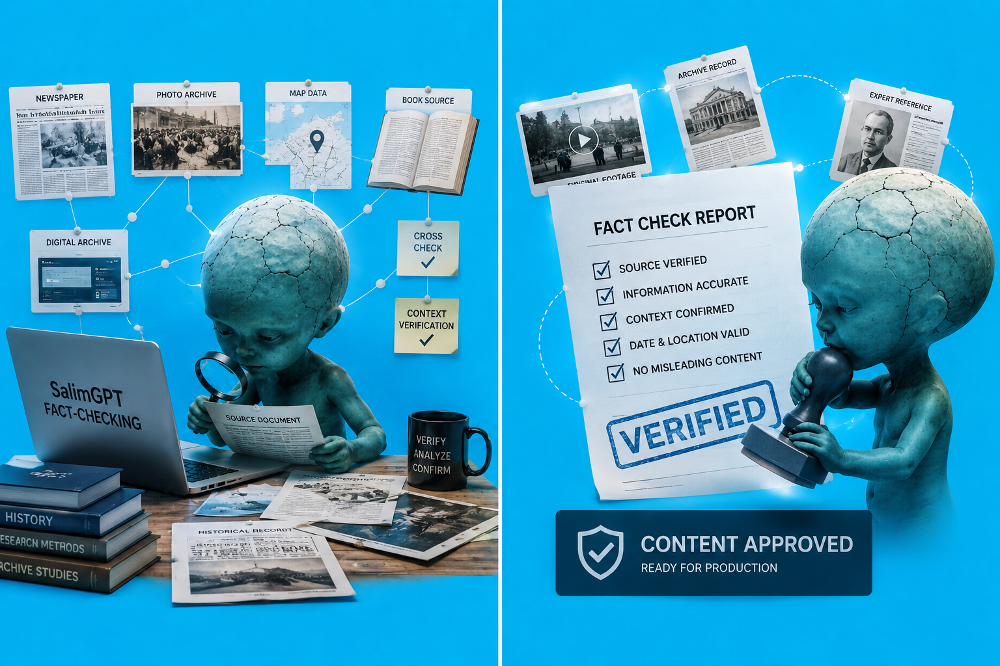

Claim Identify
কোন statement factual এবং কোনটি verification-এর জন্য গুরুত্বপূর্ণ তা চিহ্নিত করা।
SalimGPT-এর documentary research-এ কোনো তথ্য শুধু একটি website, search result বা AI response-এ পাওয়া গেছে—এই কারণে সেটিকে automatically final fact হিসেবে গ্রহণ করা হয় না। গুরুত্বপূর্ণ claim, historical event, date, statistic, scientific explanation এবং controversial information সম্ভব হলে একাধিক source, original context এবং সময়রেখার সঙ্গে মিলিয়ে দেখা হয়।

একই ঘটনা নিয়ে বিভিন্ন source ভিন্ন ভাষা, ভিন্ন তারিখ, অসম্পূর্ণ context বা আলাদা interpretation ব্যবহার করতে পারে। তাই SalimGPT-এর research process-এ source-এর সংখ্যা যেমন গুরুত্বপূর্ণ, source-এর quality এবং context-ও তেমনি গুরুত্বপূর্ণ।
কোনো তথ্য documentary-এর narrative-এর জন্য সুবিধাজনক বলেই সেটিকে গ্রহণ করা হয় না। বরং প্রশ্ন করা হয়—এই claim-এর evidence কী, original source কোথায়, অন্য independent source একই তথ্য support করছে কি না, এবং নতুন বা শক্তিশালী evidence এটিকে পরিবর্তন করছে কি না।
লক্ষ্য “যে তথ্য গল্পকে সুন্দর করবে” তা খোঁজা নয়; বরং “যে evidence পাওয়া যায়” তার ওপর গল্প তৈরি করা।সব তথ্য একই মাত্রার verification দাবি করে না। তবে documentary-এর গুরুত্বপূর্ণ factual claim সাধারণত নিচের কয়েকটি ধাপের মধ্য দিয়ে যায়।
কোন statement factual এবং কোনটি verification-এর জন্য গুরুত্বপূর্ণ তা চিহ্নিত করা।
Claim-এর সম্ভাব্য original, institutional বা credible reference খোঁজা।
সম্ভব হলে independent source-এর সঙ্গে তথ্য মিলিয়ে দেখা।
Date, chronology, publication time এবং historical sequence যাচাই।
Statistic, percentage, measurement বা numerical claim পুনরায় পরীক্ষা।
Quote বা fact original context থেকে বিচ্ছিন্ন হয়েছে কি না দেখা।
Evidence কতটা strong, uncertain বা disputed তা নির্ধারণ করা।
যাচাইয়ের ফল অনুযায়ী claim রাখা, সংশোধন বা বাদ দেওয়া।
একটি source কতটা useful হবে তা documentary-এর topic ও claim-এর ওপর নির্ভর করে। Historical question, scientific data, legal information, contemporary event এবং personal statement—প্রতিটির জন্য উপযুক্ত source type আলাদা হতে পারে।
উদাহরণস্বরূপ, কোনো সরকারি statistic-এর ক্ষেত্রে original agency report বেশি গুরুত্বপূর্ণ হতে পারে; কোনো historical quote-এর ক্ষেত্রে archive বা original publication; আর scientific explanation-এর ক্ষেত্রে peer-reviewed research বা recognised institution বেশি কার্যকর হতে পারে।
তাই SalimGPT একটি rigid source ranking blindly অনুসরণ না করে claim অনুযায়ী সবচেয়ে relevant এবং authoritative evidence খুঁজে নেওয়ার চেষ্টা করে।
ইতিহাস, biography, specialised subject ও দীর্ঘমেয়াদি context।
Scientific, medical, social science ও academic evidence।
Official record, regulation, dataset ও institutional statement।
Global data, humanitarian, economic ও institutional analysis।
Historical newspaper, document, photograph ও original record।
Contemporary event, interview ও field reporting।
Organisation-specific official information ও publication।
Discovery, reference finding ও additional source locating।
Google Search বা অন্য search engine research-এর শুরুতে কোনো topic, person, institution, archive বা document খুঁজে পেতে সহায়ক হতে পারে।
কিন্তু search result-এর snippet, AI summary বা headline নিজে final evidence হিসেবে যথেষ্ট নয়। প্রয়োজন হলে result থেকে original page, report, document বা source-এ গিয়ে information-এর context দেখা হয়।
একইভাবে কোনো website search result-এ উপরে এসেছে—এটিও সেই website-এর reliability-এর automatic guarantee নয়।
Original report, archival document, official statement, raw dataset, original interview, court document বা direct historical record।
প্রশ্ন:ঘটনাটির মূল record বা original source কোথায়?
Researcher, historian, journalist বা institution-এর original material-এর ওপর ভিত্তি করে explanation।
প্রশ্ন:এই interpretation-এর evidence কী?
Cross-check করার উদ্দেশ্য হলো একই ভুল তথ্য একাধিক website পুনরাবৃত্তি করছে কি না তা বোঝা। কারণ অনেক website original reporting না করে একই source থেকে তথ্য copy করতে পারে।
তাই তিনটি website-এ একই sentence পাওয়া গেলেই সেটি তিনটি independent confirmation হয়ে যায় না। সম্ভব হলে খোঁজা হয়— তারা কি আলাদা evidence ব্যবহার করছে, নাকি একই original source-এর ওপর নির্ভর করছে।
বিশেষভাবে বড় historical claim, controversial allegation, casualty number, scientific conclusion বা sensitive information-এর ক্ষেত্রে source independence গুরুত্বপূর্ণ।
Historical documentary-তে শুধু event সঠিক হওয়া যথেষ্ট নয়; কোন ঘটনা আগে, কোনটি পরে এবং কোন ঘটনার সঙ্গে কোন ঘটনার causal connection আছে— chronology-ও গুরুত্বপূর্ণ।
Date, year, reign, conflict, invention, policy change বা social transformation নিয়ে কাজ করার সময় available source-এর timeline যতটা সম্ভব মিলিয়ে দেখা হয়।
বিশেষ করে “এই ঘটনার কারণে ওই ঘটনা ঘটেছিল” ধরনের causal statement-এর ক্ষেত্রে সময়ের sequence এবং supporting evidence আলাদা করে বিবেচনা করা হয়।
Percentage, death toll, population, economic figure, prevalence, scientific measurement বা survey result documentary-তে ব্যবহার করার সময় শুধু সংখ্যা নয়—তার definition, year, sample, source এবং scope-ও বোঝা জরুরি।
উদাহরণস্বরূপ, একটি percentage পুরো দেশের জন্য নাকি একটি ছোট sample-এর, একটি statistic annual নাকি cumulative, এবং estimate নাকি confirmed record— এই পার্থক্যগুলো final script-এর meaning সম্পূর্ণ বদলে দিতে পারে।
Research-এর সময় conflicting information পাওয়া অস্বাভাবিক নয়। একই ঘটনার date, casualty, origin বা interpretation বিভিন্ন source-এ আলাদা হতে পারে।
এমন ক্ষেত্রে source-এর publication date, methodology, proximity to event, cited evidence, institutional credibility এবং newer correction আছে কি না বিবেচনা করা হয়।
যদি conflict পুরোপুরি resolve না হয়, final script-এ uncertainty বা disagreement পরিষ্কারভাবে উল্লেখ করা অধিক সৎ হতে পারে।
তথ্যটি প্রথম কোথা থেকে এসেছে?
কোন source concrete evidence দেখাচ্ছে?
Data বা conclusion কীভাবে তৈরি হয়েছে?
নতুন correction বা updated research আছে কি?
Sources আসলেই independent কি?
Dispute resolve না হলে সেটি স্বীকার করা।
কোনো public figure, researcher, institution বা historical source-এর statement ব্যবহার করা হলে quote কে, কখন এবং কোন context-এ বলা হয়েছিল তা বোঝার চেষ্টা করা হয়।
একটি long statement থেকে কয়েকটি শব্দ আলাদা করে এমন meaning তৈরি করা উচিত নয় যা original statement-এর উদ্দেশ্যের সঙ্গে মেলে না।
যেখানে exact quotation প্রয়োজন নয়, সেখানে তথ্যের meaning অক্ষুণ্ণ রেখে paraphrase করা হতে পারে এবং source context বজায় রাখার চেষ্টা করা হয়।
SalimGPT-এর research workflow-এ AI topic exploration, terminology, search direction, summarization, translation বা research organization-এ সহায়ক হতে পারে।
কিন্তু AI-generated answer-এ factual error, outdated information, missing context বা fabricated reference থাকতে পারে। তাই গুরুত্বপূর্ণ claim AI response-এর ওপর একা নির্ভর করে final script-এ নেওয়ার নীতি অনুসরণ করা হয় না।
AI যদি কোনো report, paper বা historical source-এর দিকে নির্দেশ করে, প্রয়োজন অনুযায়ী সেই original source খুঁজে তথ্যটি independently যাচাই করা হয়।
সম্পূর্ণ AI নীতি পড়ুনDate, event, record, measurement, documented statement বা other verifiable information।
Evidence-এর ওপর ভিত্তি করে historical, social বা editorial explanation।
Documentary storytelling-এর জন্য interpretation প্রয়োজন হতে পারে। তবে interpretation যেন verified fact-এর জায়গা দখল না করে—এই পার্থক্য editorial review-এ গুরুত্বপূর্ণ।
Documentary research-এর সময় গুরুত্বপূর্ণ source link, report title, author, publication date, archive, institution বা relevant reference প্রয়োজন অনুযায়ী সংরক্ষণ করা হতে পারে।
এর উদ্দেশ্য হলো script review, future correction, source attribution বা কোনো factual question উঠলে research trail পুনরায় দেখা সহজ করা।
ব্যক্তি ও প্রতিষ্ঠানের নাম।
Year, date ও chronology।
সংখ্যা, unit ও context।
Statement ও surrounding context।
গুরুত্বপূর্ণ claim-এর reference।
Scene fact-এর সঙ্গে মিলছে কি না।
Disputed claim ঠিকভাবে বলা হয়েছে কি না।
Storytelling facts-কে distort করছে কি না।
SalimGPT নিজেকে ভুলের ঊর্ধ্বে দাবি করে না। Research যত সতর্কই হোক, কোনো source ভুল হতে পারে, নতুন evidence আসতে পারে অথবা production-এর সময় factual mistake থেকে যেতে পারে।
কোনো গুরুত্বপূর্ণ factual error বিশ্বাসযোগ্য evidence-এর মাধ্যমে চিহ্নিত হলে প্রয়োজন অনুযায়ী article, description, future edition বা relevant publication-এ correction করার চেষ্টা করা হয়।
একইভাবে নতুন গবেষণা পুরোনো conclusion পরিবর্তন করলে updated evidence বিবেচনা করা editorial responsibility-এর অংশ।
Historical record অসম্পূর্ণ হতে পারে, scientific evidence পরিবর্তিত হতে পারে, official statistics revision হতে পারে এবং একই ঘটনার reliable source-এর মধ্যেও disagreement থাকতে পারে।
তাই SalimGPT-এর লক্ষ্য absolute certainty দাবি করা নয়; বরং publication-এর সময় available evidence-এর ভিত্তিতে যতটা সম্ভব নির্ভুল, context-aware এবং transparent explanation দেওয়া।
যেখানে uncertainty গুরুত্বপূর্ণ, সেখানে certainty-এর ভাষা ব্যবহার না করে “estimated”, “reported”, “according to” বা equivalent contextual wording ব্যবহার করা হতে পারে।
Search engine, AI, database বা software source খুঁজতে সাহায্য করতে পারে; কিন্তু কোন source যথেষ্ট credible, কোন claim disputed, কোন evidence script-এ থাকবে এবং কোন তথ্য বাদ দেওয়া হবে— সে বিষয়ে final judgement human editorial review-এর অধীনে থাকে।
SalimGPT-এর research ও final editorial direction পরিচালনা করেন Mohammad Salim।
পরিচালক সম্পর্কে বিস্তারিতStrong narration, cinematic visual এবং engaging editing documentary-কে আকর্ষণীয় করে; কিন্তু factual foundation দুর্বল হলে সেই production দীর্ঘমেয়াদে বিশ্বাসযোগ্য হতে পারে না।
তাই SalimGPT-এর research system-এ source discovery, source quality, cross-checking, chronology, statistical context, uncertainty এবং final human review— সবকিছুকে একটি connected process হিসেবে দেখা হয়।
SalimGPT — প্রমাণ যেখানে নিয়ে যায়, তথ্যকে সেখানে যেতে দেওয়া।